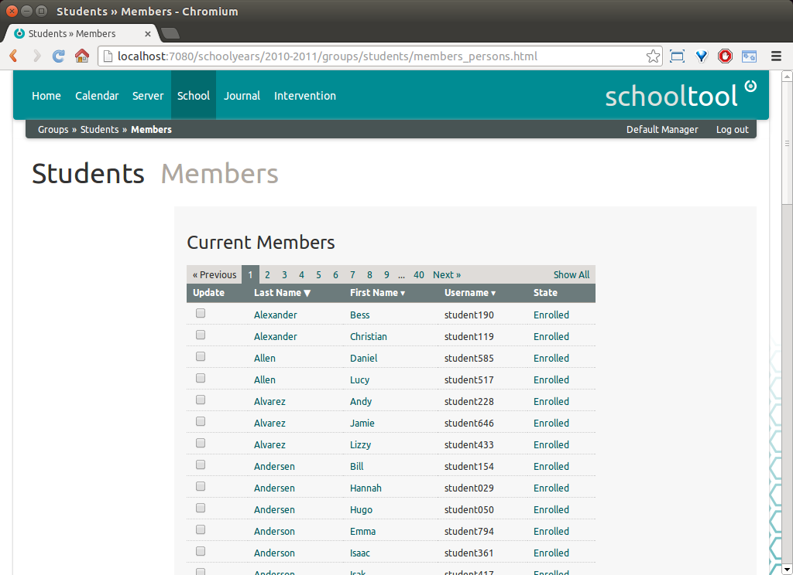
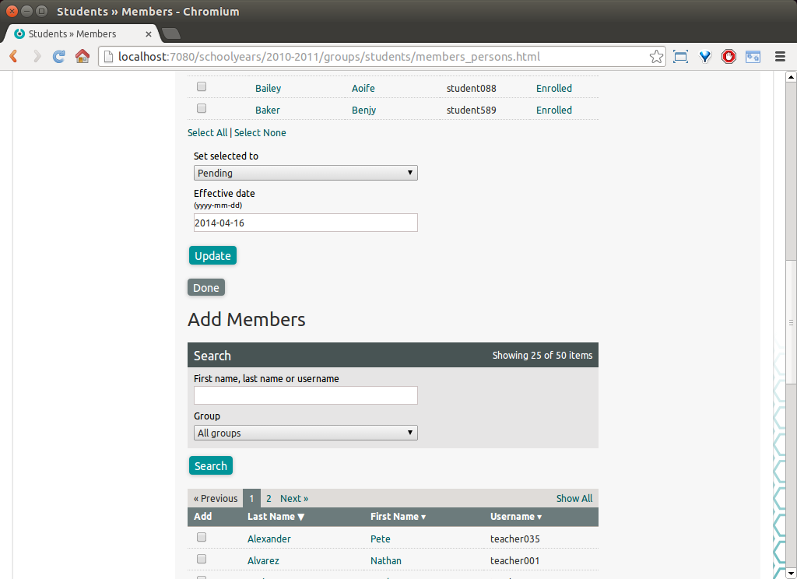
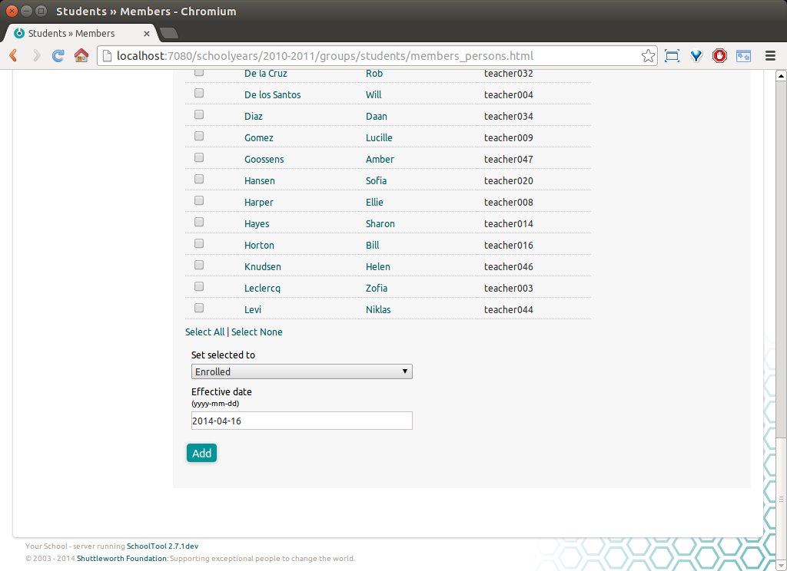
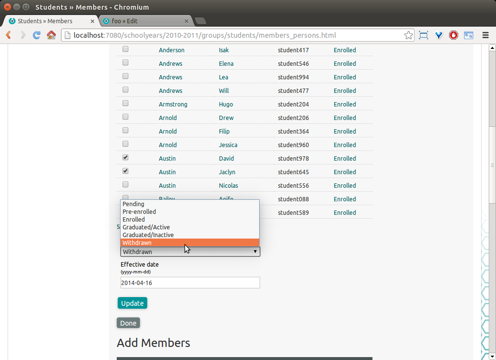
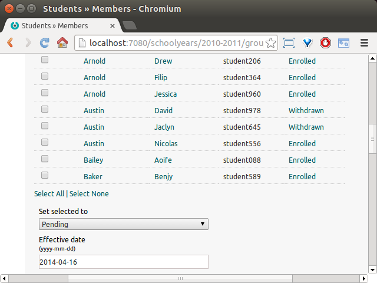

Changes in SchoolTool 2.8¶
Adding and removing members¶
From a user interface point of view, the biggest change to SchoolTool 2.8 is in the screens that add and remove people from “relationships,” such as group memberships, as instructors or students enrolled in a section, or creating a contact relationship between a student and their guardian.
There are two parts to the change:
the interface itself uses checkboxes so you can add/remove/edit multiple people at a time;
when modifying the relationship you must indicate the type of change taking place, for example, if a student has withdrawn as a student or graduated.
For the generic example, we will look at adding a person to the Students group. A student’s enrollment status within the school is indicated by their membership in the Students group.
If we navigate to the Students group, and click the edit pencil next to Members, we see the new form:
  
To change the status of one or more current students, for example, to “Withdrawn,” check the boxes next to their names, and select Withdrawn under Set selected to. You may also set the date of the change, which defaults to the current date.

Click Update:

Note that you cannot completely remove a person from a group or section. Making a relationship inactive will omit the person from most relevant views by default. If a membership or other relationship is a mistake, use the “Added in error” status to indicate this.
Adding students, or adding and editing other group memberships or relationships is similar.
On the School page, under Customize, you can select Membership States to customize the states of different types of relationships.

For example, click Student Enrollment.

In each type of relationship, there are a few pre-set “meanings” that may affect underlying functionality important to SchoolTool. For example, the basic statuses of student enrollment are defined as:
Active (an enrolled student)
Inactive (not an enrolled student)
Pre-enrolled (essentially an unenrolled applicant or future student)
Graduated/Inactive (completed the program and unenrolled)
Graduated/Active (completed the program but still enrolled as a stuent)
In addition to these “meanings,” you can create additional statuses with their own Title and Code. For example, in this form you could add an inactive “Transferred” status.